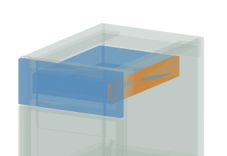
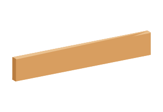
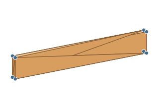
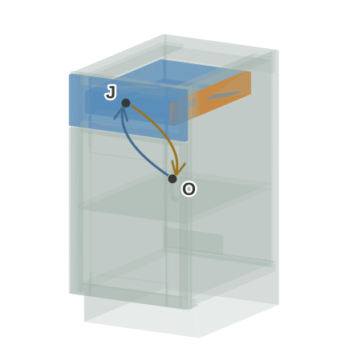

3.3 Frames, orientation & URDF
A model needs more than its shape. We also need to know which way it faces, where its joints are, and what each position is measured from.
3.3.1 The base and the world
A coordinate frame is a reference point with three directions: X, Y, and Z. Its reference point is the origin.
- World frame
- The scene’s reference. It lets us place the whole cabinet in a room.
- Base frame
- The object’s reference, attached to its root link. Here we use the cabinet body as the base.
The base is not necessarily the object’s bottom or its geometric center. Choosing a base also does not lock the object in place. Holding it fixed is a separate choice in the simulator.
3.3.2 Which way is up? Which way is front?
For this chapter’s diagrams, we choose +Z up, +X front, and +Y left in the object’s base frame. “Left” is the object’s own left when facing forward. Other models may use different axes for up and front.
First find the object’s usual upright pose. Then use its function to choose the front. Left–right symmetry can suggest an orientation, but it does not always distinguish front from back.
3.3.3 From a tree to a URDF file
URDF stands for Unified Robot Description Format. It is a text file that records links and joints, along with their geometry and other properties. Despite its name, it can describe a cabinet too.
A joint names its parent and child links. Its type gives the motion rule, axis gives the motion direction in the joint frame, and limit gives the allowed range. Its origin places the joint frame relative to the parent.
Before placing the drawer, let’s look at how its shape is stored.
3.3.4 What is a mesh?
A mesh describes a 3D shape using points and flat faces. For the drawer’s orange side panel, those points are its corners. The faces join the points to form its surface.



The second and third pictures show the same panel. The dots and lines reveal how its shape is represented; they are not extra physical pieces.
Several meshes can belong to one link. Here, the drawer’s shape files describe what to draw, while its joint tells the whole drawer how to slide.
3.3.5 Joint, link, and visual origins
Now place the drawer in the cabinet. The body is the parent link and the drawer is the child link. URDF needs to know where the drawer starts and where to draw its shapes.

O The body’s starting point
We measure positions on the cabinet from here. In this model, the points in the drawer’s shape files were also measured from O.
J The drawer’s starting point
The drawer uses J as its own zero point. At this closed position, J is also the joint’s starting point.
The shape files still use O as their zero. The visual origin tells URDF where that saved zero is relative to J.
O → J Joint origin
Start at the body’s origin O. Where is the drawer’s starting point J? The joint origin gives that offset.
J → O Visual origin, in this model
Now start at J. Where is the mesh file’s old zero point O? The visual origin gives the offset back, so the panel is placed correctly around the drawer.
The cabinet uses O as its zero point; the drawer uses J as its zero point. In this closed pose, the two frames point the same way. The offsets O → J and J → O are therefore equal and opposite: their coordinates add to zero.